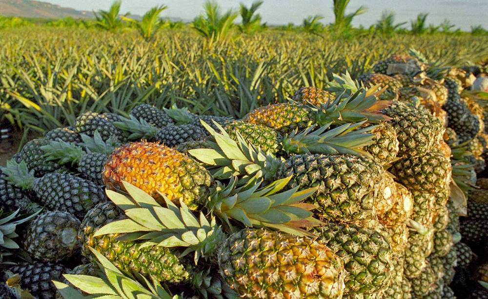

O abacaxi é uma das frutas tropicais mais consumidas pelos brasileiros e muito popular no país. Entre as frutas, ela apresenta uma versatilidade na mesa de todo mundo sendo consumida até com comidas salgadas e como ração animal.
Segundo o livro “Brasil em 50 Alimentos”, da Embrapa, o abacaxi é cultivado em todo território nacional. O Brasil é o segundo produtor mundial, com 2,69 milhões de toneladas em cerca de 68,15 mil hectares.A fruta é a quinta mais produzida no País, contribuindo com aproximadamente R$ 2,22 bilhões para o PIB agrícola. A produção é absorvida quase em sua totalidade pelo mercado interno.
Segundo o Instituto Brasileiro de Geografia e Estatística, atualmente, o Pará lidera o ranking nacional com a produção de 426.780 milhões de frutas aproximadamente (números de 2021).
Pela pesquisa da empresa Embrapa o abacaxi iniciou-se no Brasil na década de 1920 No início da década de 1970, a produção brasileira de abacaxi era de apenas 282 milhões de frutos e, concentrada na agricultura familiar, sobretudo no Nordeste e Sudeste do País, a produtividade da cultura era muito baixa.
Muitas pessoas jogam a casca do abacaxi fora, mas não sabem que poderiam aproveitar ela.
Aqui estão algumas receitas: